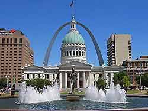

St. Louis is a major city in Missouri. It is a county located in the far eastern portion of Missouri. It is bounded by the City of St. Louis and the Mississippi River to the east, the Missouri River to the north, and the Meramec River to the south. Its iconic, 630-ft. Gateway Arch, built in the 1960s, honors the early 19th-century explorations of Lewis and Clark and America's westward expansion in general. Replica paddlewheelers ply the river, offering views of the arch. The Soulard district is home to barbecue restaurants and clubs playing blues music.
Home
This is my first webpage! I was able to code all the HTML and CSS in order to make it.
I can use my skills here to create websites for my business, my friends and family, my C.V, blog or articles, as well as any games or more experiment stuff (which is what the web is really all about).
Coding is fun.
About Me
- Working as Project manager
- I would like to develop coding skill
- I am blessed with two Kids
- Like to listen hindi music
- Cricket is my favourite sports
- Masters in Computer Science
- Post Graduate Diploma in Computer Application
- Bachelors Degree in Mathematics
- PMP Certified professional
- IBM Bluemix certification
- ITIL Certification

Ann Arbor is a city west of Detroit, in the Midwestern state of Michigan. It’s home to the sprawling University of Michigan, known for its research programs. The University of Michigan Museum of Art displays works from around the globe and spanning centuries. Science-focused attractions in the city include the Museum of Natural History and the Ann Arbor Hands-On Museum, with kid-friendly interactive exhibits.
New Delhi is the capital of India and one of Delhi city's 11 districts. Although colloquially Delhi and New Delhi are used interchangeably to refer to the National Capital Territory of Delhi, these are two distinct entities, with New Delhi forming a small part of Delhi. The National Capital Region is a much larger entity comprising the entire National Capital Territory of Delhi along with adjoining districts. It is surrounded by Haryana on three sides and Uttar Pradesh on the east.